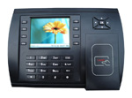

Biometric and RFID Terminals
| 
|
Biometric and proximity ID terminals allow employees to clock-in
without logging on to a computer. Terminals use standard Ethernet
communications and can be deployed at any remote site that has Internet access.
Terminals support job/department tracking and require the purchase of either
iLeave or iHR.
|
Common Terminal Terms
|
Term |
Definition |
| Biometric Terminals |
Biometric terminals recognize fingerprints and work well in office
environments. Extreme changes in temperature and humidity affect accuracy.
Matching threshold settings control sensitivity vs accuracy (false rejections
vs incorrect matches). Setup requires that each user enroll his fingerprints.
To clock in, some users will need to enter their employee # and then swipe
their finger. RFID sensors are an optional $40 accessory.
|
| RFID Terminals |
RFID terminals use proximity devices instead of fingerprints to identify
users. Proximity devices take one of three shapes: credit card, thick credit
card, or keyfob (poker chip that attaches to key chain). Unlike biometric
terminals that require users to individually enroll their fingerprints into a
terminal, RFID terminals allow one user to enter all the ID numbers for all the
proximity devices.
|
| Relay Control
|
Relay control allows a terminal to unlock a door. An electrician wires a
weatherproof RFID sensor into the terminal, and wires the terminal
into a door's electronic latch so that a user on the outside can swipe
once to both unlock the door and clock in.
|
| HID |
HID is a proprietary implementation of RFID. A RFID terminal can be turned into
an HID terminal for an additional $140.
|
Terminals
|
Price |
Item |
Description |
| $650
|
S900
Biometric Terminal |
Fingeprints, high accuracy. Color LCD. Relay control. |
| $550
|
S680 RFID
Terminal |
RFID cards. Color LCD. Relay control. |
| $588
|
US700
Biometric Terminal |
Fingeprints, high accuracy. B\W LCD. Relay control. |
| $375
|
US100C
Biometric Terminal |
Fingeprints, high accuracy. Color LCD. No relay control. |
| $375
|
US100R
RFID Terminal |
RFID cards. Black\white LCD. No relay control. Flat keypad. |
| $375
|
S300 RFID
Terminal |
RFID cards. Black\white LCD. No relay control. Raised keys. |
| $375
|
SC403 RFID Terminal |
RFID cards. Black\white. Relay control. For SC403 only, must attach A\C
adapter's ground and live wires and Ethernet cable's individual wires.
Power adapter and short ethernet cable with exposed wires comes with unit.
Will likely need extra Ethernet cable and female-to-female coupler to reach
hub.
|
Accessories
|
|
Price |
Item |
Description |
| $120
|
HID Sensor |
Enables HID card reading for S300, S680, S900. |
| $40
|
RFID Sensor for S900 |
Enables RFID card reading for S900. |
| $75
|
Weatherproof RFID
Sensor |
Mounts on outside wall. Attaches to SC403, S680 S900. |
| $100
|
50x Proximity Cards |
Use with SC403, S300, S680. Resembles thick credit cards. |
| $125
|
50x RFID Thin Cards |
Use with SC403, S300, S680. Resembles credit cards. |
| $150
|
50x PID Keyfobs |
Use with SC403, S300, S680. Resembles small poker chips that attach to key
chains. |
|
|
Contact Us
-
Biometric terminals
-
PID terminals
-
Relay control
-
Integrates with iHR and iLeave
-
Supports job costing
-
Supports department tracking
|